AIS


For a general introduction to AIS, Automatic Identification System is a good place to start, also AIVDM/AIVDO protocol decoding by Eric S. Raymond
AIS Operating Controls
AIS Target Query
Aids to Navigation AtoN
AIS Update Rate
AIS Target List
AIS Transponder and Ownship
AIS data port
ToolBox AIS Tab
CPA Calculation
Lost Targets
Display
Attenuation of less critical targets
Rollover
To track or not to track
Treat WPL Sentences as APRS Postion Reports
Toolbox MMSI Tab
When exactly is an alarm activated
AIS Target Quick Graphic References
The screen-dump below gives you a first feel for how AIS targets are presented and used in OpenCPN.
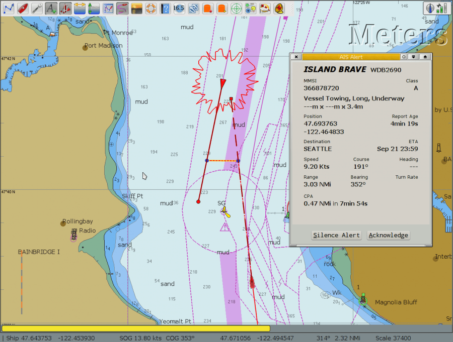
The Look ahead mode is activated here and our own vessel is proceeding 352 deg at 13.8 kts, leaving an activated track behind, and projecting a dashed line ahead representing the course. This ends in a dot, that represents where we will be in 6 minutes, or 1.38 nautical miles ahead.
We are meeting a vessel, steaming in the opposite direction following the traffic separation. This target also has a line and a dot in-front of it representing course and where it will be in 6 minutes(user configurable), and a track behind it. The red/yellow line terminated with two blue dots represents where the vessels will be at CPA –closest point of approach– or when the are nearest each other, with present courses and speeds. The meeting vessel is red, as it is a potential danger to us. An AIS target alert dialog has just popped up.
There is a lot of information about the vessels that transmit AIS signals.
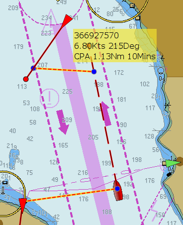
The cursor is on top of the the meeting vessel on a SW course. As we have not yet received full information, which can take a while, we don't get the name but an id number, called the MMSI number, instead. Exactly what is shown in the yellow pop-up is configured in the AIS tabs Rollover heading.
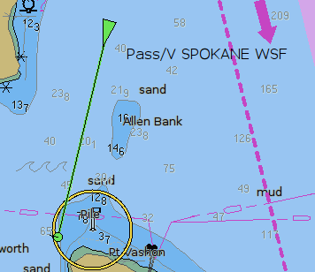
This vessel is identified by name, and has a green color, as it does not represent any danger to our navigation.
AIS Operating Controls
The Menubar-AIS and Toolbar-AIS provide useful operating controls of key AIS parameters which may need to be adjusted during use.
MenuBar> AIS Dropdown

To turn on the Menubar use Options> User Interface> Show Menubar \
These Menubar > AIS Dropdown controls work together for quick access:
- Show AIS Targets=Options > Ships > AIS Targets > Display: Show AIS
- Hide Moored AIS Targets=Options > Ships > AIS Targets > Display: Suppress Anchored/Moored Targets…
- Attenuate Less Critical AIS Targets.. [Exception, see below]
- Show AIS Target tracks=Options > Ships > AIS Targets > Display: Show Target Tracks Length (min)
- Show CPA Alerts=Options > Ships > AIS Targets > CPA/TCPA Alerts: Show CPA/TCPA Alert Dialogs
- Sound CPA Alarms=Options > Ships > AIS Targets > CPA/TCPA Alerts: Play sound to CPA/TCPA Alerts…
NOTE: Options > Ships > AIS Targets > Display: Check Attenuate Less Critical AIS Targets to enable it. Also when “Attenuate..” is unavailable, the Toolbar AIS Icon click rotation drops the selection for Attenuate all AIS targets.
Toolbar > AIS
 Toolbar AIS Icon Message (Clickable Rotation to change settings. Read the pause message.)
Toolbar AIS Icon Message (Clickable Rotation to change settings. Read the pause message.)
- Attenuate Less Critical AIS Targets (if enabled under Options > Ships > AIS)
- Hide AIS Targets
- Show all AIS Targets
- Attenuate all AIS Targets (dropped in rotation if unchecked under Options > Ships > AIS Targets)
AIS Target Query
What is an MMSI number? Maritime Mobile Service Identifier (MMSI) is a number identifying a ship in communication. MMSI consists of nine digits. All VHF units using Digital Selective Call (DSC), are programmed with the vessels MMSI. The same applies for AIS and EPIRBs.
What is an IMO Number? “International Maritime Organization (IMO) numbers are a unique reference for ships and for registered ship owners and management companies.
They were introduced under the SOLAS Convention to improve maritime safety and security and to reduce maritime fraud. For ships, the IMO number remains linked to the hull for its lifetime, regardless of a change in name, flag, or owner.” From Wikipedia
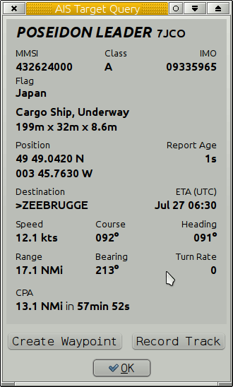
Instead of just hovering the cursor on an AIS object, double click, and the dialog above pops up. A lot of relevant information is displayed. CPA, Closest Point of Approach, to Ownship is 12.7 miles in 12 min 57s. More information about the target itself, is available on Internet address:
MarineTraffic
http://www.marinetraffic.com/ais/shipdetails.aspx?mmsi="MMSI number here",
in this case: http://www.marinetraffic.com/ais/shipdetails.aspx?mmsi=233150000
Buttons in the Target Query Dialog
Create Waypoint drops a mark at the targets current position.
Record Track/ Stop Recording Pressing the Record Track button brings up a new dialog.
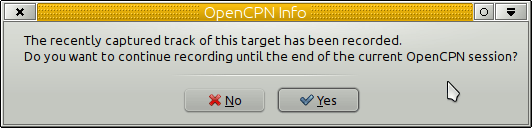
The recently recorded track of the “Poseidon Leader” will appear in the Route & Mark managers track tab on a line starting with “AIS Poseidon Leader…”.
If the Yes button is pressed, the Target Query Dialog button Record Track changes to Stop Recording. All tracks recorded will behave just like any other track.

Right-clicking an AIS target brings up a dialog focused on AIS.
Aids to Navigation AtoN
More and more aids to navigation are equipped with an AIS transmitter, and show up as a target in OpenCPN like this
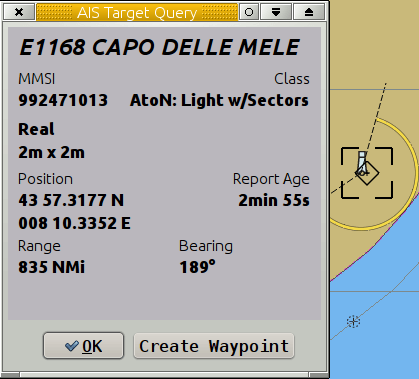
Note the word “Real”, that says that this is an object that exists in reality.
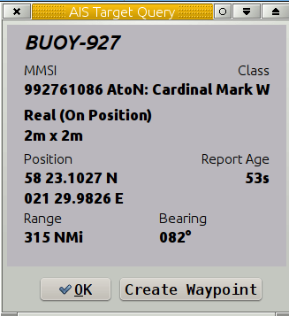
Here we have an AIS transmitter on a floating W Cardinal Mark. This is of course real and the buoy is on position. If the buoy is off position, for some reason, the Aton icon becomes red.
There are also Virtual AtoNs marked with their own icon.

Virtual AtoNs are used to quickly make mariners aware of things like new wrecks, uncharted hazards and floating debris. They are normally used for a short duration until replaced by real aids or charted, removed or dispersed. Virtual AtoNs are also used for information. For example, the position of the Italian Maritime Rescue Coordinating Center. Note the word “Virtual” in the dialog.
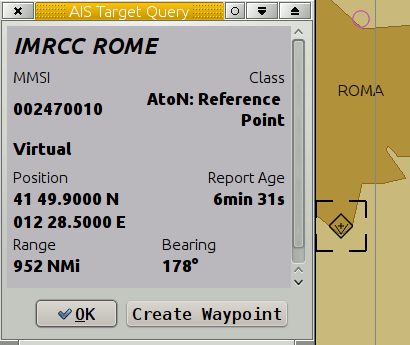
Note: OpenCPN handles the situation where MMSI is set to 0 (zero). This can occur with an incorrectly configured AtoN. Nevertheless, all available information is shown.
AIS Update Rate
How often is the AIS information updated from each target? The required update rates from an AIS target transmitter is shown below.
| | | Class A | Class B | |
| | | | | |
| Static Data | | 6min | 6min | |
| | | | | |
| Dynamic Data | < 3kn moored | 3min | | |
| | upto 2kn | 10s | 3min | |
| | > 2kn | | 30s | |
| | < 14kn (turning) | 10s (3.33s) | | |
| | < 23kn (turning) | 6s (2s) | | |
| | > 23kn | 2s | |
AIS Target List
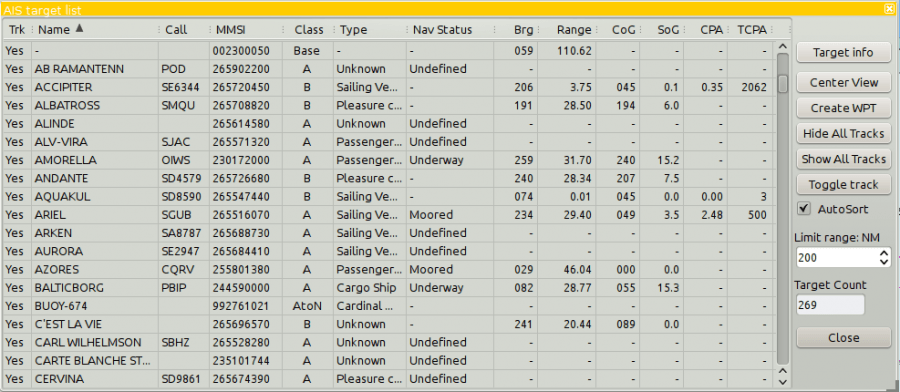
Another way to present the AIS information. The AIS target list is available through the right click menu.
Sorting targets
Click on the header in a column to sort according to this criteria. For example, clicking “Range” sorts the targets with the nearest target on top. Click one more time to get the target, furthest away on top. There is an “autosort” checkbox. When checked, auto sort is on. May be unchecked/rechecked any time. The autosort checkbox is automatically unchecked when target count exceeds 1000. However, it may be rechecked directly by the user, even if the target count is exceeded, and will stay checked.
Active Search And Rescue Target (SART) and Digital Selective Calling (DSC) distress targets, will always stay at the top of the list, even when sorting.
AIS targets with Lat > +/-85 deg will show brg “unavailable”. OpenCPN is not suited for Polar Navigation. * Target Info button: Click on a target to highlight it and then click the button to display the information dialog.
- Center View button: Highlight a target an click this button and the screen will center on the target.
- Create WPT. Drop a waypoint at the current position of the target.
- Hide All Tracks If tracking is on in Options→Ships→Ais Targets, all tracks will disappear from the screen. Read more furher down this page.
- Show All Tracks Will reverse the previous option, and show all available tracks. If Options→Ships→Ais Targets is off, tracking will start for all targets.
- Toggle Track Reverse the tracking status.
The Trk column in the list indicates current tracking status for each target.
- AutoSort See “Sorting Targets” above, for an explanation of this box.
- Limit Range: The list will only show targets with a range less than, or equal to this value.
- Target Count: Total number of AIS targets.
AIS Transponder and Ownship
OpenCPN does NOT show Ownship (i.e. AIVDO message) as an AIS target or in the target list. AIVDO is processed only in the main navigation thread. The only true way to monitor the output of a transponder, is with a separate AIS receiver. Earlier releases did show ownship, but this was a bug, simply an illusion. The earlier presence of AIVDO (ownship) information in the data stream, really only indicated that the transponder was turned on and received GPS signals.
AIS data port
Select your AIS input port in the Connection Tab. The AIS button in the ToolBar, appears different according to the following conditions.
The AIS toolbar tool cycles
with each mouse click as follows: (hover for next control action)
- AIS show all targets (normal, default)
- AIS Scale non-critical targets. (Provided it has been enabled under Options > Ships > AIS Tab)
- AIS Hide all targets
- and back to AIS Show All targets.
Also please refer to AIS Operating Controls above, under Toolbar > AIS Icon which shows how to change key AIS settings by pausing the mouse on the AIS Icon to view the popup message indicating how the AIS controls will change with the next click on the icon. These controls rotate or cycle with each click.
AIS Alive. The default AIS button. This icon appears as soon as an AIS port is active in the tool-box. It is also the normal state with an AIS receiver working and with no targets of interest.
AIS Alive and Activity, a small green circle will illuminate in the lower right corner of the Ais buton. If there is at least one AIS message every 4 seconds, the light will remain illuminated.
AIS Suppressed. This icon indicates only that target suppression is activated in the AIS tab in the ToolBox. Referring to the picture above there are two sort of suppression:
- Suppress display of all moored/anchored targets, max speed specified in dialog.
- Suppress Alerts for moored/anchored targets.
This icon will be over-ridden with the AIS alarm button if an alarm is, or becomes, active according to the AIS tab alarms settings in the toolbox.
AIS Alarm. A target exist that raises the alarm as defined in the AIS tab in the ToolBox. It is the three settings “CPA Calculations”, that rules if and when an alarm is raised.
AIS Disabled. No targets, if available, are shown on the screen. This button toggles with the other buttons. For example, if the AIS alarm button is visible, click the button and it will change to the “AIS Disabled” button, and all targets, alarms etc, disappears from the display. Click again and the original button and AIS display comes back.
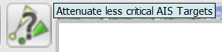 Attenuate less critical Targets
ToolBox AIS Tab

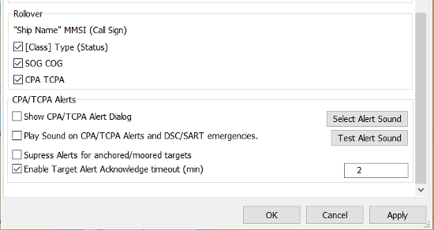
This tab controls the behavior of many things in the AIS display. There are no “best” settings. It all depend on where you are, what kind of navigation you are into and what kind of vessel you are on. It is your responsibility to evaluate this.
CPA calculation
Rules for when the Closest Point of Approach- CPA (when two vessels are nearest each other) and the Time For Closest Point of Approach (TCPA) is calculated, and when warnings are activated. There are three tick boxes, which can be activated with user set values.
No CPA Calculation if target range is greater than (NMi)
If the vessel is far away it is less interesting to calculate CPA. In a busy waterway this could cut down on clutter and processing speed if a reasonable value is set.
Warn if CPA is less than(NMI)
Similar arguments to No 1. This controls when a warning for minimum CPA distance is given. A warning can be both on the screen and a sound. The CPA is shown on the screen when a warning is active.
..and TCPA is less than (min)
This Box can only be activated if the previous box is active. If the minimum CPA is far in the future, it's not so interesting. If it's hours away, both vessels have probably changed speed and course in the meantime. Set TCPA to a reasonable value value depending on circumstances. A lower value if negotiating a busy waterway. A higher value when offshore. Many factors plays a role here. If you need to get off watch crew up on deck for a manuver, take this into account, for example. Do you find that you get to many useless alarms? Consider lowering this value and/or the CPA value. If a target is within the distance set in #1 and without an active warning, theCPA can be shown anyway through right-clicking on the target.
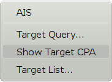
Show Target CPA
Show Target CPA toggles with Hide Target CPA
In Target CPA Details, a few more tricks are available.
Lost Targets
Rules for how lost targets should be handled on the display.
Mark Target as lost after (min)
Target is regarded as lost if no transmission are received for the number of minutes set here, the target will change on the display and have a black bar across.
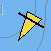
Remove lost targets after (min)
The lost target will be removed from the display after the number of minutes set here.
Display
If and how a vessels course and speed should be displayed and if stationary vessels should be on the screen.
Show target COG predictor arrow, length (min)
An arrow will be shown in front of the vessel representing it's COG (Course Over Ground). The length of this arrow and the dot at the end of it represents the calculated position in the number of minutes set here. Set easily calculated values. If a vessel approaches you doing 15 kts and the time is set to 6 minutes, the dot will be 1.5 nautical miles ahead of the vessel.
The width of the “Target COG predictor arrow” can be adjusted in the opencpn.ini configuration file. Find the line below and adjust the value.
AISCOGPredictorWidth=3
Warning: Don't edit to the opencpn.ini (opencpn.conf) file when OpenCPN is running.
To track or not to track?
This choice below boils down to two basic scenarios.
- All targets will be tracked, with the option of turning off tracks for selected targets.
- No targets will be tracked, with the option of starting to track selected targets
The Target List Trk column indicates current tracking status of each target.
There is more about tracks in the section “AIS Target List” above.
Show target tracks, length (min)
This is the basic setting that can be refined in the “AIS Target list”. With this box ticked targets are tracked even if they are not displayed. Start out with this option ticked, if you hesitate. Come back and fine tune the settings later on, if necessary.
A track will be shown behind a target. This helps to judge the target vessels intentions.
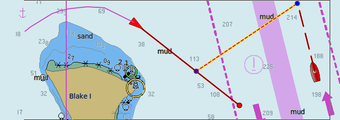
When “Show target tracks” is ticked, the context sensitive AIS menu changes to include the toggle option “Hide Target Track - Show Target Track”.
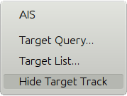
When “Show target tracks” is NOT ticked, the context sensitive AIS menu changes to include the toggle option “Show Target Track - Hide Target Track”. A big difference, in this case, is that OpenCPN has no record of the track. The tracking will start from the moment “Show Target Track” is clicked.
Suppress anchored/moored targets
“Suppress anchored/moored targets, speed max (kn)” A target  will not be displayed if the speed is less than the value set. There are two exceptions to this rule, “Aids to Navigation (AtoN)” and “Vessels Not Under Command”. The rule is aimed at catching anchored or moored vessels. The “Navigational Status” is set by the ships and may not be correct. Be aware that the COG arrow will not be shown for any target with a COG less than this value, hence it's important to enter a very low value.
will not be displayed if the speed is less than the value set. There are two exceptions to this rule, “Aids to Navigation (AtoN)” and “Vessels Not Under Command”. The rule is aimed at catching anchored or moored vessels. The “Navigational Status” is set by the ships and may not be correct. Be aware that the COG arrow will not be shown for any target with a COG less than this value, hence it's important to enter a very low value.
Attenuation of less critical targets
“Allow attenuation of less critical targets if more than …targets [number]” If checked AND selected under “Menubar-AIS” or “Toolbar-AIS” then at least [number] of targets will be displayed normally. If unchecked then all AIS targets are displayed normally and this option is greyed out and unavailable.

Note smaller attenuated green ship on lower left.
“Attenuation of Less Critical Targets” will declutter the display without removing AIS targets from the display by reducing the size of less critical targets. Less critical targets are determined with a weighted rules filter. The important targets remain unchanged, including display of the ships name. Less critical targets are reduced in size and do not display ship name, to reduce clutter on the chart.
Details for Attenuation of Less Critical Targets
The “importance” of a target depends on:
- Speed of the target. Faster targets are more important (max speed acknowledged is hard coded at 12 knots).
- CPA. The closer a target will come the more important it is.
- TCPA. If the time to 'collision' is small the target is more important.
- Distance to the target. Far away is less important.
- Size of target. Larger targets are more important.
- Class B targets don't transmit ships size and is set to 0(zero).
For each parameter above a factor is calculated. The highest value of this factor depends on the value in the config file. All these values are then added, which gives each target a 'weight'.
From all AIS targets the top [number, say 10] targets which are most important, are displayed at full scale. Only [number, say 10] important targets are displayed, depending of the value in Options > Ships > AIS > Display: “Allow attenuation of less critical targets if more than …targets [number]“. The weighted importance is frequently calculated and as long as a target remains in the top [number, say 10], it will be displayed normally.
The less critical targets are still displayed, but at reduced size. The size of the less critical targets can be adjusted with the
[AISScaledSizeMinimal=50]
setting in the config file, where 50 stands for 50%. Scaled down targets don't have names, no nav status symbols, and no heading line.
Show Area Notices(from AIS binary messages).
Show AIS targets real size
Zooming in on a target will eventually show a rectangle using the real size , if available. The picture below also shows how differences in course and heading are treated.

Show names with AIS targets at scale greater than 1:
[select value] With this box activated…..this is what you get!
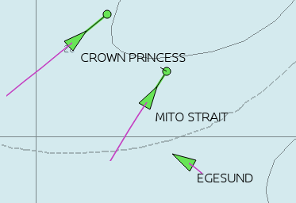
Note that this setting also controls if a numerical value will be displayed alongside a tidal current arrow.
Treat WPL sentences as APRS position reports
APRS (Automatic Packet Reporting System) is utilized by HAM radio operators around the world.The NMEA WPL sentence is shorthand for for “waypoint location”. If the box is checked,a WPL sentence will be assumed to be an AIS-like APRS target. Enable it on the AIS tab in the Toolbox if you have it disabled. WPL Sentences have the same functionality as AIS or radar targets (track recording, creating a permanent waypoint on current position etc.)
Rollover
Tick the boxes for the kind of information shown when hovering with the cursor over a target. This is what you get with all the settings ticked.
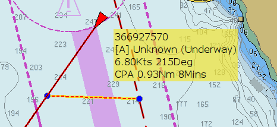
CPA/TCPA Alerts and DSC/SART Emergencies
When an alert is triggered, a jagged circle in red is drawn around the target that set off the alarm. Additional events can be set here, drawing more attention to the alarm. For practical navigation, make sure your alarm sound is set.
Show CPA/TCPA Alert Dialog
Shows an alert dialog on the screen with target information when an alarm is triggered. This setting only applies to AIS CPA/TCPA alerts. A DSC/SART emergency will always generate a dialog.
Play Sound on CPA/TCPA Alert Dialog
and DSC/SART emergencies. Sounds an alarm when an alarm is triggered.
Supress alerts for anchored/moored targets
Don't show alarms for anchored and moored targets.
Select Alert Sound
Select an alarm that suits you, instead of the installed default sound. This alarm will also be used if an anchor watch is set. Due to copyright issues, only a few sound files are included. The default location for these files are ”/usr/share/opencpn/sounds/” on Linux and typically C:\Program Files\OpenCPN\sounds on Windows XP. Users can add their own generic “.wav” sound files. These files can be in any suitable place in the file-system.
Test Alert Sound
Test the selected sound and make sure this important feature is working.
Enable Target Alert Acknowledge timeout
Once a target alert is acknowledged, wait the set number of minutes before the alert comes up again (if still applicable).
Toolbox MMSI Tab
When exactly is an alarm activated?
An alert is set off if your boat is approaching the CPA, the blue dot on the extension of the course line, and the previously discussed set of conditions are met. Once the distance to the CPA increases, this happens when the involved vessels has passed each other, the alarm stops, even if the other conditions still apply.
One user noticed an alert every few seconds, yet the target was still green. The explanation is: Variation between alert status and ship icon color is due to rapid changes in target course/speed. The target color can change from red to green while the alert dialog is showing. This may happen so fast that the red icon is not actually seen. OpenCPN does not automatically cancel the alert dialog in this case, in order to not mask information.
Types of Transponders recognized by OpenCPN
- Class A
- Class B
- APRS Automatic Packet Reporting System Targets
- ARPA Automatic Radar Plotting Aid Tagets
- ATON Aid to Navigation, both “Virtual” and “Real”.
- BASE Base Station
- DSC Digital Selective Calling Targets
- GPSG_BUDDY GpsGate Buddy Targets
- SAR Aircraft Aircraft participating in Search and Rescue.
- SART Search and Rescue Transponder Targets
OpenCPN Remembers the names of seen and fully identified target. The names are cached internally and help identify targets quicker on next start. Targets not yet fully identified, where the name comes from the cache, are displayed lime green. See example below. The AIS name caching can be turned off in the opencpn.ini/opencpn.config file by adding a line like this.
[Settings]
EnableAISNameCache=0
The name of the file where the list of previous MMSI and ship names are stored is “mmsitoname.csv” in case you would like to clear it. This file is in the same folder as your configuration file (Click the ? icon in the toolbar to see the location, it is platform dependent).
AIS Target Quick Graphic References
Note that AIS targets reporting position unavailable will be rendered in grey colour.
| Ais_Icon | Informaton | Ais_Icon | Information |
 | An active AIS SART and is a distress call equal to a “Mayday”transmission. More about AIS SART. | .. | The V-shape stern indicates a Class B target. Tugboats and pilot boats very often carry Class B transponders. These are often designed specifically for small commercial boats, fishing boats and pleasure crafts. |
| Icon displayed when testing an AIS-SART device. | | Targets is complying with the Euro AIS Inland specification. |
 | Aircraft participating in Search and Rescue. |  | This vessel has the “Inland Blue Flag” set, it's a part of the European, Inland AIS standard. The “Blue Flag” signal, commonly seen on inland waters, indicates that the vessel requests a “stbd-stbd” passage or crossing. This Blue Signal is manually switched on/off, by the target. |
| Potential Danger. | | Aton, Aid to Navigation, for example a Lighthouse or a Buoy with an AIS transmitter. |
| 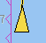 | No Danger. Not Identified (Voyage data not received) | | Aton, Aid to Navigation, that is off it's suposed position. For example a buoy equiped with AIS that has come adrift. |
| 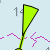 | No Danger. Not Identified (Name from cached data) | | Virtual Aton, Virtual Aid to Navigation, not a real marker. Can be useful for a range of situations. A new wreck, is one example. Further explanations. |
| No Danger. Identified | | Virtual Aton, off position. Actually seen in the wild, but may be a user config error. |
 | Lost Target | | AIS Base Station |
| 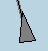 | Ship which has lost fix - position unavailable. Displayed at the last known position. | | The following tagets only displays if DSC messages, GpsGate mesages, Radar or APRS messages are mixed in to the incomming AIS stream, by using, for example a multiplexer. More on the following pages. |
| 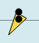 | Vessel not under command. | 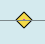 | DSC Station. Only the DSC message received. The position contains only degrees and minutes of Latitude and Longitude. |
| Vessel restricted in ability to manoeuvre. | | DSC Station. DSC and DSE messages received. The DSE message contains the missing decimals of minutes of Latitude and Longitude. The result is a much more accurate position. |
| Vessel constrained by draft. | | DSC Station transmitting a distress signal. Treat this as a “Mayday” call. |
| Vessel aground. | | GpsGate Buddy target. |
| 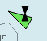 | Vessel engaged in fishing. |  | ARPA Target |
| High Speed- and Wing In Ground- crafts. This includes Hydrofoils, Hovercrafts and low flying crafts utilising the ground effect. | | APRS Target |
| Anchored or moored. Displayed when the transmitted “Navigation status” is “at anchor” or “Moored”. There is no guarantee that this status is correct, as it is set manually on the transmitting ship… | 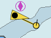 | …illustrated by this ship. Note the black line on the yellow circle. This indicates that the vessel is turning to port (left), also illustrated by the lag in the display update. ROT - Rate Of Turn is available in the “Ais Target Query” dialog, through the right click menu. |